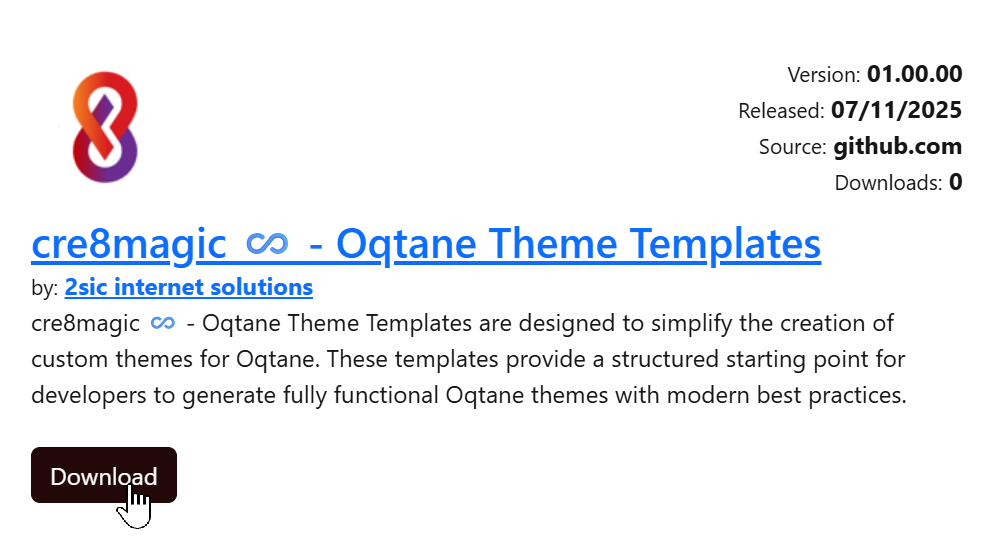
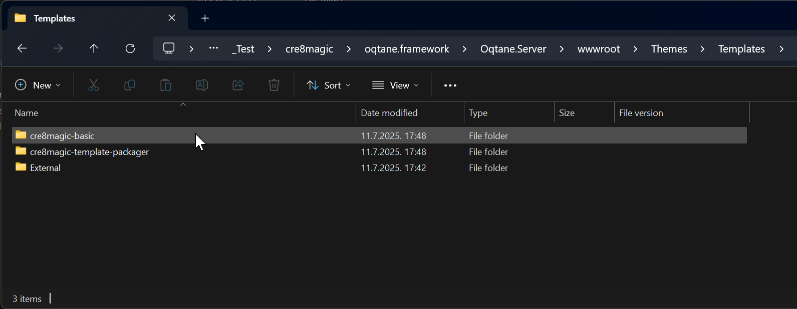
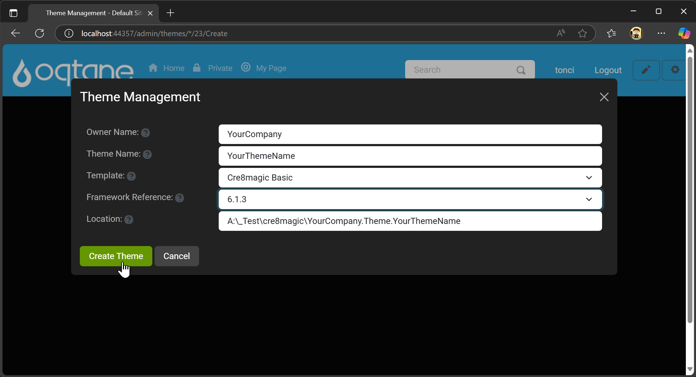
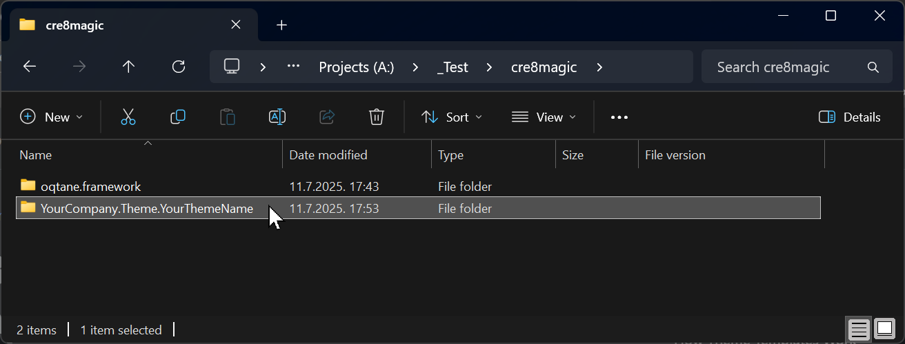
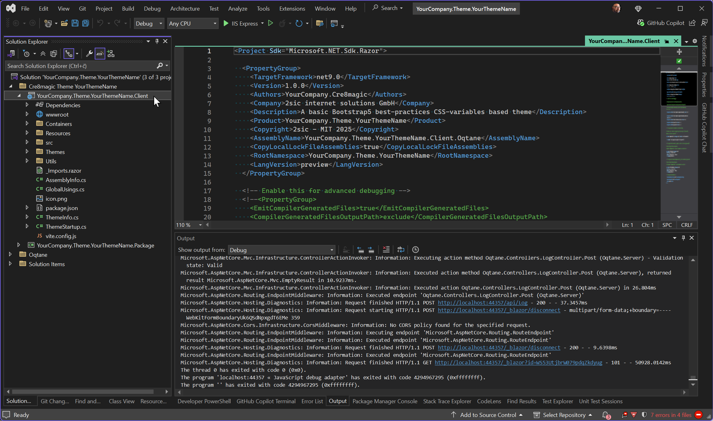

cre8magic ♾️ - Oqtane Theme Templates
The cre8magic ♾️ - Oqtane Theme Templates simplify the creation of custom Oqtane themes by providing a structured starting point with modern best practices.
Package Overview
The ToSic.Cre8magic.Theme.Templates.1.0.0.nupkg package includes the following templates:
cre8magic-basic:
A theme template based on cre8magic ♾️ - Oqtane Theme Basic. It enhances the original Oqtane Basic Theme with Bootstrap 5 best practices, such as CSS variables, and other improvements.cre8magic-template-packager:
A specialized template for deploying all theme templates within a local Oqtane.Server installation or creating a package for distribution. Developers can use this to create and share their own Oqtane theme templates.
Distribution Channels
The cre8magic ♾️ - Oqtane Theme Templates package is available through:
- GitHub Releases: Download the latest version.
- Oqtane Marketplace: Access the package directly from the marketplace.

Installation Guide
Follow these steps to install the cre8magic ♾️ - Oqtane Theme Templates:
Download the Package:
Get theToSic.Cre8magic.Theme.Templates.1.0.0.nupkgfile from the GitHub Releases.Place the File:
Copy the.nupkgfile to theOqtane.Server/Packagesfolder in your Oqtane installation.Restart Oqtane:
Restart the Oqtane application to load the new templates.Verify Installation:
The new templates will appear in theOqtane.Server/wwwroot/Themes/Templatesfolder.

Creating a Custom Theme
Access Theme Management:
In the Oqtane Admin UI, navigate to the Themes Management section and click Create Theme.Fill in Details:
Provide the following information:Owner NameTheme Name- Select the desired
templatefrom the list. - Choose the
Framework.
Then, click Create Theme.
Locate the Solution:
A Visual Studio solution for your new theme will be created near theoqtane.frameworkfolder.
Customize in Visual Studio:
Open the solution in Visual Studio and start customizing it. Building and packaging work as usual.

History
- Released 2025-07-11.
Permanent link: https://go.cre8magic.org/templates